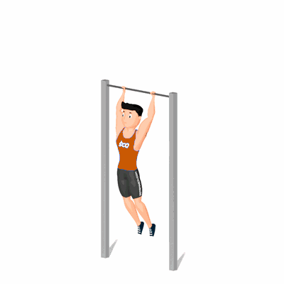

Kipping Bar Muscle-Up

Esse exercício trabalha os músculos do ombros, braços, quadris e núcleo.
Ficha Técnica
Tipo: CrossFit
Grupo Muscular: Corpo
Aparelho: Nenhum
Músculos: Nenhum
Como realizar
- Agarre-se na barra com as mãos na largura dos ombros;
- Empurre o peito para fora para trazer o corpo para a frente;
- Puxe os ombros para trás para inverter a curva do corpo;
- Puxe-se para cima depois de balançar 2-3 vezes;
- Afaste o queixo pelo menos 2-3 polegadas (5,
- 1-7,6 cm) da barra;
- Abaixe-se para mover-se para outra puxada para cima.
 RC STORE
RC STORE